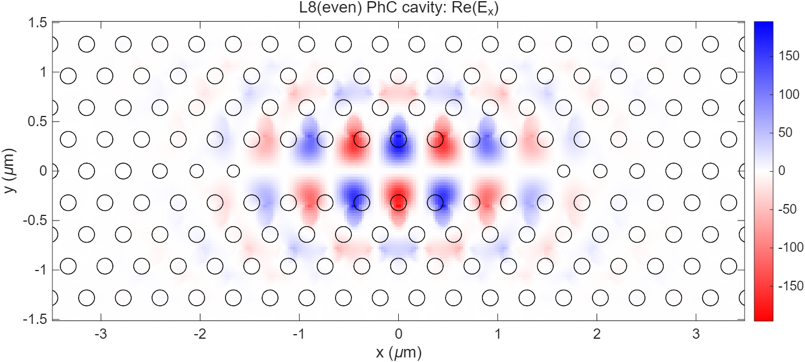

Cavity modes
InP photonic crystal cavity
An L8 line defect interrupts a triangular air-hole lattice in a 340 nm InP slab. The 3D FDTD model uses a 370 nm period and targets a mode near 1.51 µm.
Cavity modes
An L8 line defect interrupts a triangular air-hole lattice in a 340 nm InP slab. The 3D FDTD model uses a 370 nm period and targets a mode near 1.51 µm.
